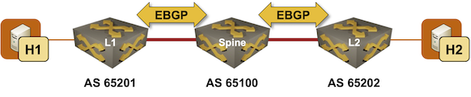

EVPN Designs: EBGP-Only EVPN
EVPN was designed for use on IBGP sessions within an autonomous system, with IGP (OSPF or IS-IS) providing paths to BGP next hops. However, after the BGP as a better IGP idea (formalized in RFC 7938) became popular, multiple vendors started implementing EVPN in various combinations of IBGP and EBGP.
In this lab exercise, you’ll deploy EVPN in a straightforward EBGP-only fabric in which every device belongs to a different BGP autonomous system:

Tip
For more details, read the ipSpace.net Data Center BGP article (in particular the BGP in EVPN-Based Data Center Fabrics section) and the design-related ipSpace.net EVPN blog posts.
Device Requirements
You can use any device supported by the netlab BGP and VLAN configuration modules. The device should support VXLAN and EVPN, and be able to run EVPN over EBGP sessions.
Start the Lab
Assuming you already set up your lab infrastructure:
- Change directory to
design/2-ebgp - Execute netlab up
- Log into lab devices with netlab connect and verify that the IP addresses and the BGP routing are properly configured.
Existing Device Configuration
- The switches in your lab (l1, l2, spine) are preconfigured with tenant VLAN using VLAN tag 100 and VXLAN VNI 1000.
- IPv4 addresses are configured on Linux hosts, switch loopback interfaces, and the interswitch link (details).
- The switches have EBGP sessions on directly-connected interfaces (details). These sessions are configured to exchange IPv4 prefixes.
Configuration Tasks
Using the procedures you mastered in the Extend a Single VLAN Segment with VXLAN lab exercise:
- Configure VXLAN VTEP on L1 and L2. The Spine device is not running VXLAN.
- Configure MAC-VRF for the tenant VLAN on L1 and L2. The Spine device is an IPv4 router and is not involved in VLAN/VXLAN forwarding.
Warning
You must use the same EVPN route targets on L1 and L2 even though they’re in different autonomous systems.
- Activate EVPN address family on all EBGP sessions.
You’ll probably need to tweak the EVPN address-family parameters to get a working EVPN fabric. The parameters you might have to fine-tune include:
- Propagation of extended BGP communities. EVPN does not work correctly without extended BGP communities attached to EVPN routes.
- BGP next hop handling (configured on individual neighbors or with an address-family route-map). The EVPN next hop must remain the IP address of the ingress VTEP; Spine switch must not change the BGP next hops when propagating EVPN routes between L1 and L2.
- Retention and propagation of all EVPN routes. Some devices do not retain or propagate third-party EVPN routes unless they are a route reflector or have a corresponding local VNI.
- Acceptance of EBGP routes with next hops that are not directly connected.
- Device-specific tweaks that enable EVPN route propagation on EVPN sessions.
Verification and Troubleshooting
If you did everything correctly, H1 should be able to ping H2.
If you have to troubleshoot your configuration, start with the troubleshooting steps outlined in the Extend a Single VLAN Segment with VXLAN lab exercise.
However, you’ll most likely encounter errors in the EVPN-over-EBGP configuration, where these blog posts might come in handy (the blog posts talk about multi-pod EVPN designs, but focus on troubleshooting EVPN address family on EBGP sessions):
- Troubleshooting Multi-Pod EVPN: Overview
- Fixing Next Hops
- Troubleshooting Route Targets
- Extended BGP Communities
Cheating
- Shut down your lab with the netlab down command
- Start the lab from the
solution.ymltopology with the netlab up solution.yml command - Explore the L1/L2/Spine device configuration
Reference Information
Lab Wiring
| Origin Device | Origin Port | Destination Device | Destination Port |
|---|---|---|---|
| l1 | Ethernet1 | spine | Ethernet1 |
| l2 | Ethernet1 | spine | Ethernet2 |
| h1 | eth1 | l1 | Ethernet2 |
| h2 | eth1 | l2 | Ethernet2 |
Lab Addressing
| Node/Interface | IPv4 Address | IPv6 Address | Description |
|---|---|---|---|
| spine | 10.0.0.1/32 | Loopback | |
| Ethernet1 | 10.1.0.2/30 | spine -> l1 | |
| Ethernet2 | 10.1.0.6/30 | spine -> l2 | |
| l1 | 10.0.0.2/32 | Loopback | |
| Ethernet1 | 10.1.0.1/30 | l1 -> spine | |
| l2 | 10.0.0.3/32 | Loopback | |
| Ethernet1 | 10.1.0.5/30 | l2 -> spine | |
| h1 | |||
| eth1 | 172.16.0.4/24 | h1 -> [l1,h2,l2] | |
| h2 | |||
| eth1 | 172.16.0.5/24 | h2 -> [h1,l1,l2] |
BGP Routing
| Node | Router ID/ Neighbor |
Router AS/ Neighbor AS |
Neighbor IPv4 |
|---|---|---|---|
| spine | 10.0.0.1 | 65000 | |
| l1 | 65101 | 10.1.0.1 | |
| l2 | 65102 | 10.1.0.5 | |
| l1 | 10.0.0.2 | 65101 | |
| spine | 65000 | 10.1.0.2 | |
| l2 | 10.0.0.3 | 65102 | |
| spine | 65000 | 10.1.0.6 |